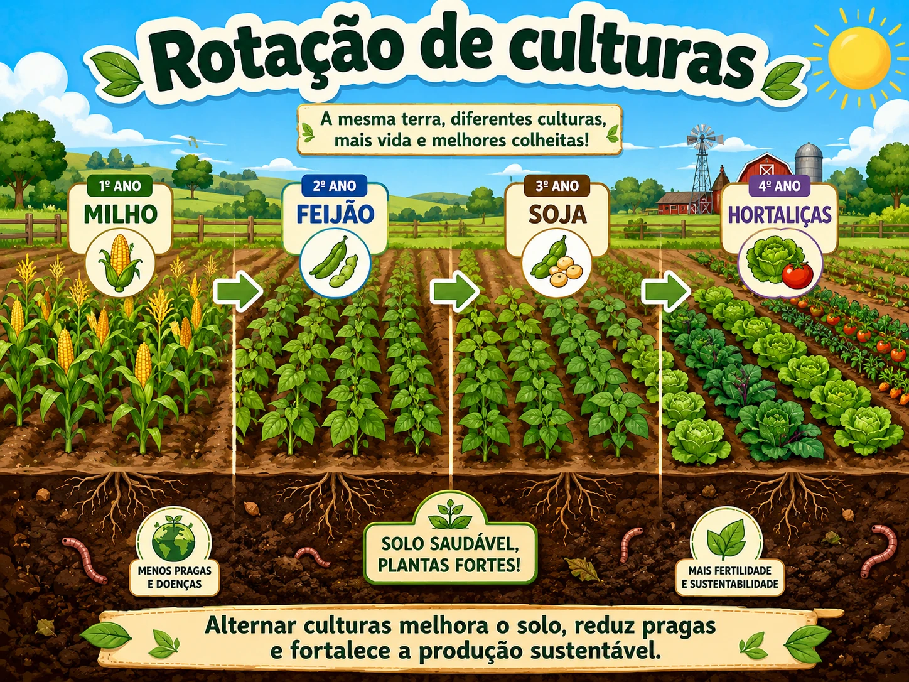
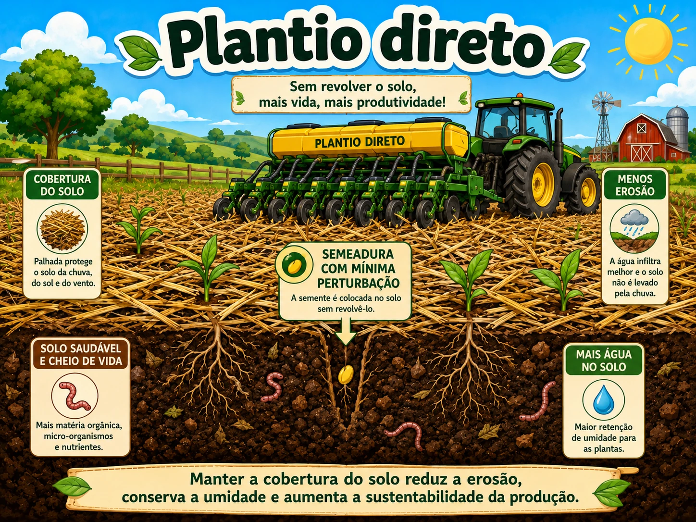
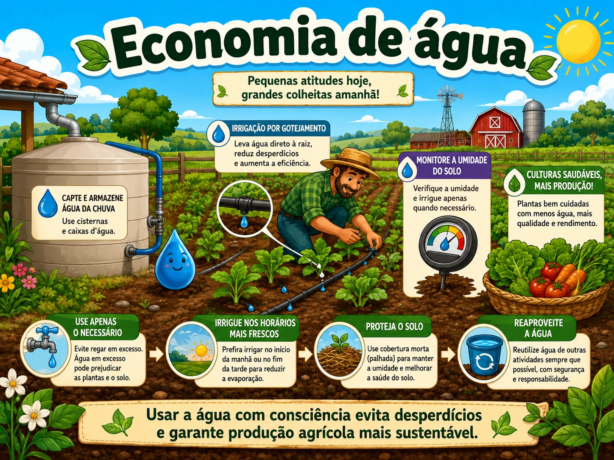
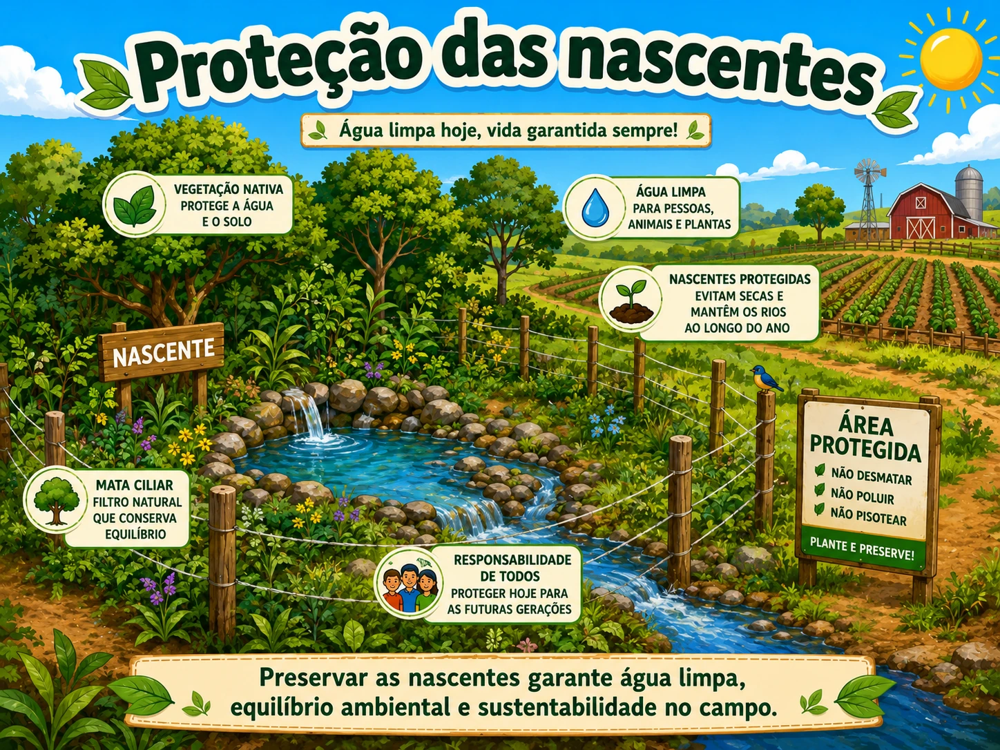
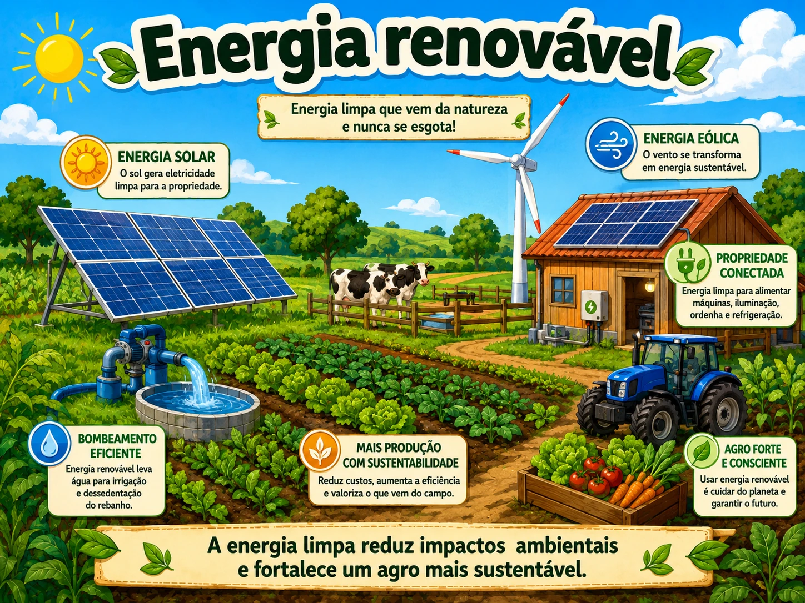

Agro sustentável
Concilia produtividade, uso responsável dos recursos naturais e qualidade de vida.
Projeto Agrinho 2026
Equilíbrio entre produção e meio ambiente
Concilia produtividade, uso responsável dos recursos naturais e qualidade de vida.

Sensores, drones e dados reduzem desperdícios e impactos ambientais.

Alterna espécies, melhora o solo e reduz pragas e doenças.

Mantém cobertura vegetal, conserva a umidade e reduz a erosão.

Irrigação eficiente e monitoramento evitam desperdícios.

A vegetação protege a água, o solo e os ecossistemas.

Fontes solar, eólica e biomassa reduzem impactos ambientais.

Resíduos orgânicos podem virar adubo, composto e biogás.
Práticas que fortalecem a produção rural e preservam o solo, a água e a biodiversidade.





